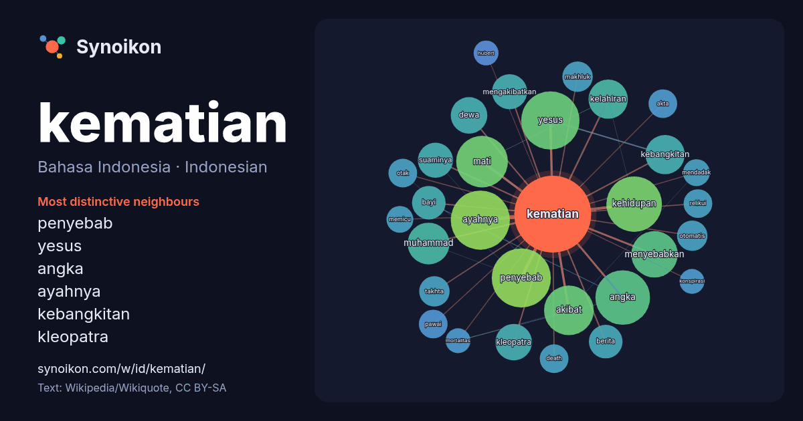

Bahasa Indonesia · Indonesian · popular word
kematian
“death” · The words found around it in 1015 instances from Indonesian Wikipedia, Wikiquote.

Most distinctive neighbours
- penyebab 26×
- yesus 23×
- angka 17×
- ayahnya 15×
- kebangkitan 14×
- kleopatra 13×
- mati 13×
- kehidupan 12×
- muhammad 11×
- kelahiran 11×
- akibat 11×
- suaminya 9.2×
- relikui 8.8×
- pawai 8.6×
- mengakibatkan 8.6×
- menyebabkan 8.4×
- bayi 8.3×
- akta 8.3×
- death 8.3×
- dewa 8.1×
× = how many times more often than in general Indonesian Wikipedia text.
Most frequent neighbours
- orang 36
- ayahnya 34
- penyebab 34
- yesus 33
- kehidupan 30
- angka 29
- mati 26
- akibat 24
- dunia 22
- manusia 22
- hidup 21
- menyebabkan 21
- bahasa 20
- muhammad 17
- kebangkitan 15
- kelahiran 15
- mengalami 14
- tanggal 14
- dewa 13
- kleopatra 13
In context
- Kematian adalah penghentian permanen yang tidak dapat dikembalikan dari semua fungsi biologis makhluk hidup. Secara medis kematian ditandai oleh berhentinya Wikipedia snippets · Kematian
- Daftar otomatis Kematian 2026 A. Bakri HM Zaini Abdullah Achmad Sutjipto Jayden Adams Scott Adams Adrian Neville Afrika Bambaataa Ahmed Ammi Ahn Sung-ki Wikipedia snippets · Kematian tahun 2026
- peristiwa tersebut terlalu jauh untuk menjadi penyebab utama kematian Muhammad. Kematian Muhammad membawa keterkejutan besar di kalangan umat Islam, terutama Wikipedia snippets · Kematian Muhammad
- Kematian Affan Kurniawan terjadi pada saat unjuk rasa di sekitar Gedung DPR/MPR RI, Jakarta Pusat pada 28 Agustus 2025 dengan cara ditabrak dan dilindas Wikipedia snippets · Kematian Affan Kurniawan
- kamp kerja paksa di Siberia, yang menginspirasinya untuk menulis Rumah Kematian (1860–1862). Selain kamp kerja paksa, ia juga harus menjalani enam tahun Wikipedia snippets · Fyodor Dostoyevsky
- Minggu (27/1). Presiden menyampaikan belasungkawa yang mendalam atas kematian Soeharto. Minggu sore pukul 16.00 WIB, Presiden Susilo Bambang Yudhoyono Wikipedia snippets · Soeharto
- Penyaliban dan kematian Yesus adalah kematian Yesus dengan dipaku di kayu salib. Peristiwa penyaliban ini terjadi di Yudea pada abad ke-1, kemungkinan Wikipedia snippets · Penyaliban dan kematian Yesus
- Ferdy Sambo. Keluarga Brigadir Polisi Yosua Hutabarat mendapatkan kabar kematian Brigadir Yosua Hutabarat sekitar 23.30 saat mereka sedang berada di Padang Wikipedia snippets · Pembunuhan Nofriansyah Yosua Hutabarat
More Indonesian words
- air
- anjing
- bahasa
- emas
- iklim
- jantung
- jembatan
- kebenaran
- kehidupan
- kekuasaan
- keluarga
- kereta
- kerja
- kesehatan
- kesenian
- kucing
- lingkungan
- makanan
- sains
- sejarah
- tuhan
- uang
Precomputed on 2026-10-09 with default settings (±5 words, medium corpus). The interactive map can refresh it with live data.